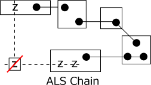
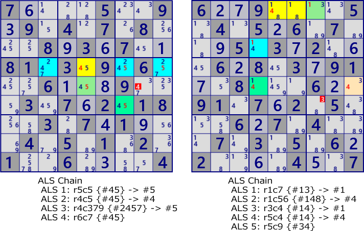

ALS Chain
ALS Chain is an analysis algorithm that connects ALS into a loop in RCC.
As shown in the diagram of ALS Chain, ALS forms a chain of links through the RCC link,
and Locked occurs when this sequence has the following properties.
- First and last ALS has a digit z different from RCC.
- Outside of ALS, there are cells covering all z in the first and last ALS.
The digit z can be excluded from the cell covering all z of the first ALS and the last ALS.
If the digit z is true, this cell is a connection of ALS-RCC-ALS,
ALSs becomes LockedSet in order, and the last ALS lacks candidate digits.

Example of ALS Chain.

7....5..9.9.4.7.8...8.3.7..81.3.9.6...6...9...3.7.2.18..3.7.1...4.5.1.2.1..6....4
6..9....5.4.5.6.7...5.3.2...6.8.3.91..8...6..91.7.2.5...6.7.4...7.3.5.6.2....4..7
ALS Chain program
ALS Chain analysis program uses backtracking. Backtrack is a form common to chain system algorithms. The basic structure of the search routine is shown next.
Basic structure of Chain system search
- In the main function, set the starting node and the first chain, and call SearchChain.
Once the solution is found in the search, it returns true.
- Search Routine extends the chain by adding one next node.
- Next, it checks whether this chain is a solution. If it is a solution, it returns with a true value.
- It returns all the recursive calls with true values until it reaches the main.
- If the chain is not a solution, decrease the remaining depth by 1 and recursively call itself
unless the depth limit has been reached.
- When the depth limit is reached, return with false value.
Also, when has examined all the next nodes from the current state, return with false value.
The advantage of recursively defining a search routine is that
the search routine only needs to manage each state,
and there is no need to manage the entire chain.
The depth of the search can also be controlled by setting the maximum search depth of the main function.
There is also a way that depth control does not simply control the number of search stages.
ALS Chain uses the size of ALS for depth control (reduces the number of sizes of the next ALS for each step),
so that the solution with the small total of ALS size is determined first.
The search algorithm is simple, but the search itself is huge and time consuming.
There are quite a few alternative algorithms for search algorithms,
it is important to apply simple methods first.
//Basic structure of search routine
main{
Set originNode;
chain=originNode;
if( SearchChain( originNode, originNode, maz_depth, chain) ) solved;
}
bool SearchChain( origin, preNode, depth, chain ){
foreach( nextNode in Next node list ){
Connect the next node to the chain
if(Is the chain solved?) return true;
if( (--depth)>0 ){
if( SearchChain(origin, nextNode, depth, chain) ) return true;
}
else return false;//Interruption because the depth limit has been reached
}
return false;
}ALS Chain program
The program consists of three parts: ALS Chain main, chain search, and solution verification
In ALS Chain main, ALS generation and ALS-RCC-ALS link generation are done.
In the chain search, set the chain depth, set the first ALS, and start actual search.
it use a stack for search history management.
By including bit representation variable for ALS overlap check,
state restoration at backtrack recovery is automatically processed.
By including variables for ALS overlap checking in history management,
state restoration at backtrack recovery is automatically processed.
public partial class ALSTechGen: AnalyzerBaseV2{
public bool ALS_Chain(){
ALSMan.ALS_Search(1);
if( ALSMan.ALSLst==null || ALSMan.ALSLst.Count<=3 ) return false;
ALSMan.Create_ALS2ALS_Link(true); //F:singly T:doubly
for( int szCtrl=3; szCtrl<=12; szCtrl++ ){ //Search from small size ALS-Chain
if( AnMan.CheckTimeOut() ) return false;
var SolStack=new Stack<UALSPair>();
foreach( var ALSHead in ALSMan.ALSLst.Where(p=>p.ConnLst!=null && !p.LimitF) ){
if( !ALSHead.singly ) continue;
bool limitF=false;
foreach( var LK0 in ALSHead.ConnLst ){
SolStack.Push(LK0);
LK0.rcUsed = LK0.ALSpre.B81 | LK0.ALSnxt.B81;
int szCtrlX = szCtrl-LK0.ALSpre.Size-LK0.ALSnxt.Size;
_Search_ALSChain(LK0,LK0,SolStack, szCtrlX,ref limitF); //Recursive Search
if(SolCode>0) return true;
SolStack.Pop();
}
if(!limitF) ALSHead.LimitF=true;//When the solution is within the size limit, do not search by the next size }
}
return false;
}
private bool _Search_ALSChain( UALSPair LK0, UALSPair LKpre, Stack<UALSPair> SolStack, int szCtrl, ref bool limitF ){
int nRccPre=LKpre.nRCC;
foreach( var LKnxt in LKpre.ALSnxt.ConnLst.Where(p=>(p.nRCC!=nRccPre)) ){
UALS UAnxt=LKnxt.ALSnxt;
if( !UAnxt.singly ) continue;
int szCtrlX = szCtrl-UAnxt.Size;
if (szCtrlX<0) { limitF=true; return false; }
if( !(LKpre.rcUsed&UAnxt.B81).IsZero() ) continue;
SolStack.Push(LKnxt);
Bit81 rcUsedNxt = LKpre.rcUsed|UAnxt.B81;
if( _CheckSolution_ALSChain(LK0,LKnxt,rcUsedNxt,SolStack) ) return true;
LKnxt.rcUsed = rcUsedNxt;
if( _Search_ALSChain(LK0,LKnxt,SolStack,szCtrlX,ref limitF) ) return true;
SolStack.Pop();
}
return false;
}
private bool _CheckSolution_ALSChain( UALSPair LK0, UALSPair LKn, Bit81 rcUsed, Stack<UALSPair> SolStack ){
int ElmBH = LK0.ALSpre.FreeB.BitReset(LK0.nRCC);
int ElmBT = LKn.ALSnxt.FreeB.BitReset(LKn.nRCC);
int ElmB =ElmBH&ElmBT;
if( ElmB==0 ) return false;
bool solF=false;
foreach( int Eno in ElmB.IEGet_BtoNo() ){
int EnoB=(1<<Eno);
Bit81 Ez=new Bit81();
foreach( var P in LK0.ALSpre.UCellLst.Where(p=>(p.FreeB&EnoB)>0)) Ez.BPSet(P.rc);
foreach( var P in LKn.ALSnxt.UCellLst.Where(p=>(p.FreeB&EnoB)>0)) Ez.BPSet(P.rc);
Bit81 TBD=(new Bit81(pBDL,EnoB))-rcUsed;
foreach (var rc in TBD.IEGet_rc() ){
if( (Ez-ConnectedCells[rc]).IsZero() ){ pBDL[rc].CancelB|=EnoB; SolCode=2; }
}
}
if(SolCode>0){
.
. (Solution report code)
.
return true;
}
return false;
}
}